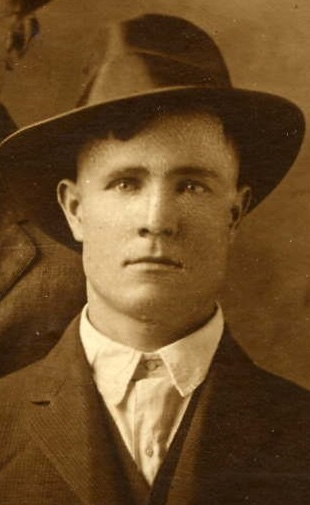

William Levi Herrin Sr.
1892–1975

Life Events
Born: May 4, 1892 — Homerville, Clinch, Georgia, United States
Died: March 12, 1975 — Taylor, Florida, United States
Family
Father: Thomas Levi Herrin
Mother: Nancy T. Jewell
Spouse: Laura Etta Palmer
Children
Military Service
No military service information has been added.
Biography
William Levi Herrin was born on May 4, 1892, in Clinch County, Georgia, the son of Thomas Levi Herrin and Nancy T. Jewell. He grew up in south Georgia and as a young man married Laura Etta Palmer of Pearson, Georgia. Together they would raise a large family of ten children.
By 1920, William and Laura Etta were living in Clinch County with their first two children, Ollie Clayton and James Talmage. William was working as a farmer on a general farm. During the following decade the family moved to the Pearson area of Atkinson County, Georgia. By 1930, William and Laura owned their home and were raising six children: Ollie, James, Ida Mae, Gladys, Mary Lou, and Dorothy. William continued to support his growing family through farming.
The family continued to grow during the 1930s with the births of William "Billy," Evelyn, and Shelby Jean. By 1940, William and Laura Etta had moved their family from Georgia to Lafayette County, Florida. Their tenth and youngest child, Deloris, was born in Florida in 1942. The 1950 census found William and Laura Etta still in Lafayette County, with five of their younger children remaining at home. William, then 58, was still working as a farmer.
Farming was a major part of William's working life, but in his later years he also worked in the logging and sawmill business. In 1954, he moved from Mayo to Perry, Florida. Laura Etta died in 1959, leaving William a widower after more than four decades of marriage.
William remained in the Perry area for the rest of his life and was a member of the Church of Jesus Christ of Latter-day Saints. He died at Doctors Memorial Hospital in Perry on March 12, 1975, at the age of 82. He was buried at Woodlawn Cemetery in Perry, where Laura Etta had been buried sixteen years earlier.
By the time of William's death, the family he and Laura Etta had begun many decades earlier had grown considerably. His obituary reported eight surviving children, 28 grandchildren, and 28 great-grandchildren.
Photos
Family photographs will be added here.
Sources
-
1920 United States Census — William Levi Herrin Household
Type: Census1920 United States Census recording William L. Herren and his family in Clinch County, Georgia. William was recorded as a farmer working a general farm. The census records his daughter Ollie under her original name, Ollie Clayton.
Location: District 1061, Clinch, Georgia, United States
Household: William L. Herren Household
Household Members:
- William L. Herren, head, age 27
- Laura E. Herren, wife, age 22
- Ollie Clayton Herren, daughter, age 2 3/12
- James T. Herren, son, age 2/12
Supports: William Levi Herrin and Laura Etta Palmer residing in Clinch County, Georgia in 1920, William Levi Herrin working as a farmer, Ollie Clayton Herrin residing with her parents, James Talmage Herrin residing with his parents, Ollie Herrin recorded under her original name, Ollie Clayton
-
1930 United States Census — William Levi Herrin Household
Type: Census1930 United States Census recording the household of William L. Herrin in Pearson, Atkinson County, Georgia. William was recorded as a farmer on a general farm, and the family owned its home.
Location: Pearson, Atkinson, Georgia, United States
Household: William L. Herrin Household
Household Members:
- William L. Herrin, head, age 38
- Laura Herrin, wife, age 32
- Ollie Herrin, daughter, age 12
- James Herrin, son, age 10
- Ida Mae Herrin, daughter, age 8
- Gladys Herrin, daughter, age 5
- Mary L. Herrin, daughter, age 3
- Dorothy Herrin, daughter, age 2
Supports: William Levi Herrin and Laura Etta Palmer residing in Pearson, Georgia in 1930, William Levi Herrin working as a farmer, The Herrin family owning its home, Ollie, James, Ida Mae, Gladys, Mary Lou, and Dorothy residing with their parents
-
1940 United States Census — William Levi Herrin Household
Type: Census1940 United States Census recording William and Laura Etta Herrin and their family in Lafayette County, Florida. The family surname was recorded as Harring. The census reports their earlier residence in Georgia near the Pearson and Atkinson County area.
Location: Lafayette, Florida, United States
Household: William L. Harring Household
Household Members:
- William L. Harring, head, age 47
- Laura E. Harring, wife, age 40
- Ollie Mae Harring, daughter, age 22
- James Harring, son, age 20
- Ida Mae Harring, daughter, age 18
- Gladys Harring, daughter, age 15
- Mary Lou Harring, daughter, age 13
- Dorothy Harring, daughter, age 10
- Billie Harring, son, age 8
- Evelyn Harring, daughter, age 5
- Shelby Dean Harring, daughter, age 1
Supports: William Levi Herrin and Laura Etta Palmer residing in Lafayette County, Florida in 1940, The Herrin family's move from Georgia to Florida, Nine children residing with William and Laura Etta, Ollie recorded as Ollie Mae by 1940, William Levi Herrin Jr. recorded as Billie, Shelby Jean Herrin recorded as Shelby Dean
-
1950 United States Census — William Levi Herrin Household
Type: Census1950 United States Census recording William and Laura Etta Herrin and five of their children in Lafayette County, Florida. William was still working as a farmer.
Location: Lafayette, Florida, United States
Household: William L. Herrin Household
Household Members:
- William L. Herrin, head, age 58
- Laura E. Herrin, wife, age 55
- Dorothy Herrin, daughter, age 20
- Billy Herrin, son, age 17
- Evelyn Herrin, daughter, age 16
- Shelby J. Herrin, daughter, age 11
- Deloris Herrin, daughter, age 7
Supports: William Levi Herrin and Laura Etta Palmer residing in Lafayette County, Florida in 1950, William Levi Herrin working as a farmer, Dorothy, Billy, Evelyn, Shelby Jean, and Deloris residing with their parents, Deloris Herrin recorded as born in Florida
-
Death Certificate of William Levi Herrin
Type: Death CertificateFlorida death certificate for William Levi Herrin, recorded on the certificate as William Levie Herrin. It documents his birth on May 4, 1892, in Georgia and his death on March 12, 1975, at Doctors Memorial Hospital in Perry. His usual occupation was recorded as logging in the sawmill industry. His daughter Deloris Morgan was the informant. The certificate identifies his father as Thomas L. Herrin and records his mother as Nancy Smith, which differs from other family information identifying his mother as Nancy T. Jewell.
Location: Perry, Taylor, Florida, United States
Supports: William Levi Herrin's birth date, William Levi Herrin's death date and death place, William Levi Herrin's later work in logging and the sawmill industry, Thomas L. Herrin as William Levi Herrin's father, Deloris Morgan as the informant, William Levi Herrin's burial at Woodlawn Cemetery in Perry, A conflicting record of William Levi Herrin's mother's name
-
Obituary of William Levi Herrin
Type: ObituaryObituary for William Levi Herrin published in the Tallahassee Democrat on March 13, 1975. The obituary describes him as a native of Clinch County, Georgia, who moved to Perry from Mayo in 1954 and worked in the logging business. It identifies his surviving children and reports 28 grandchildren and 28 great-grandchildren.
Location: Perry, Taylor, Florida, United States
Supports: William Levi Herrin's Clinch County, Georgia origins, William Levi Herrin's move from Mayo to Perry in 1954, William Levi Herrin's work in the logging business, William Levi Herrin's membership in the Church of Jesus Christ of Latter-day Saints, William Levi Herrin's surviving children, William Levi Herrin having 28 grandchildren and 28 great-grandchildren at the time of his death